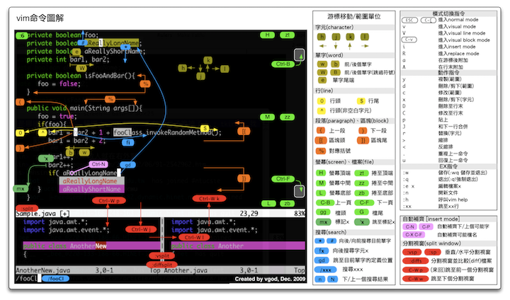

使用
wklken的k-vim配置来补全Shell/Python/JS代码，而pyenv和其相关插件则是创建和切换Python虚拟环境使用，可以比较完美的实现你对于编程的基础化需求，使用和安装门槛比较低，推荐新手可以尝鲜。

1. 安装环境配置
我是以自己买的阿里
ECS为例，系统为CentOS7，进行安装和演示。
- [1] 安装基础环境
- 主要是升级系统的包以及安装相关依赖库文件
# 1.更新yum本地软件
$ sudo yum upgrade
$ sudo yum update
$ sudo yum groupinstall -y "Development tools"
# 2.安装相关软件
$ sudo yum install -y git wget
# 3.升级gcc来支持c++11
$ sudo yum install -y centos-release-scl -y
$ sudo yum install -y devtoolset-3-toolchain -y
$ sudo yum install -y gcc-c++
# 4.安装相关依赖
$ sudo yum install -y zlib-devel
$ sudo yum install -y bzip2 bzip2-devel
$ sudo yum install -y readline-devel python-devel
$ sudo yum install -y sqlite sqlite-devel
$ sudo yum install -y openssl-devel libffi-devel
- [2] Vim8
CentOS7中默认安装了vim7.4，而我们需要安装安装vim8
# 1.下载vim8软件包
$ mkdir ~/software; cd ~/software
$ git clone https://github.com/vim/vim.git
$ cd vim/src
# 2.生成安装配置文件
# 打开对Python2/3编写的插件的支持，指定Python2/3的路径
$ ./configure \
--with-features=huge \
--enable-pythoninterp=yes \
--enable-python3interp=yes \
--with-python-config-dir=/usr/lib/python2.7/config \
--with-python3-config-dir=/usr/lib/python3.6/config \
--prefix=/usr/local/vim8
# 3.编译并安装软件包
$ sudo make && sudo make install
# 4.生成链接文件
$ ln -s /usr/local/vim8/bin/vim /usr/local/bin/vim
# 5.确认安装是否成功
$ vim --version
- [3] Python3.6
- 因为
CentOS7系统自带的Python版本比较低，不喜欢使用 - 我这里推荐使用再安装
Python3.6版本，可以写更加炫酷的代码
- 因为
# 1.安装EPEL依赖和IUS软件源
$ sudo yum install -y epel-release
$ sudo yum install -y https://centos7.iuscommunity.org/ius-release.rpm
# 2.安装Python3.6版本
$ sudo yum install -y python36u
$ sudo ln -s /bin/python3.6 /bin/python3
# 3.安装pip3工具
$ sudo yum install -y python36u-pip
$ sudo ln -s /bin/pip3.6 /bin/pip3
2. 安装 k-vim 配置
支持
Vim8异步语法检查，使用YCM自动补全，使用vim-plug管理插件。
- [1] 代码下载
$ cd ~/software
$ git clone https://github.com/wklken/k-vim.git
- [2] 安装依赖包
# 1.系统依赖
$ sudo yum install python-devel.x86_64
$ sudo rpm -Uvh https://dl.fedoraproject.org/pub/epel/epel-release-latest-7.noarch.rpm
$ sudo yum install cmake
$ sudo yum install the_silver_searcher
# 2.配置Python补全
$ sudo pip install flake8 yapf
# 3.配置Javascript补全
$ sudo yum install -y nodejs npm
$ sudo npm install -g jslint
$ sudo npm install -g jshint
$ sudo npm install -g eslint eslint-plugin-standard
$ sudo npm install -g eslint-plugin-html babel-eslint
$ sudo npm install -g eslint-plugin-import eslint-plugin-node
$ sudo npm install -g eslint-plugin-promise eslint-config-standard
- [3] 开始安装
# 进入目录执行安装
# 安装所需的插件都是从Github中clone的，速度完全取决于网速
# 之后YCM会自动编译，如果编译失败的话需要手动编译, 有问题见YCM文档
$ cd ~/software/k-vim/
$ sh -x install.sh
- [4] 相关配置
# 1.选择安装插件集合，编辑vimrc.bundles文件
# 选定集合后，使用插件管理工具进行安装/更新，才能够生效
" more options: ['json', 'nginx', 'golang', 'ruby', 'less', 'json', ]
let g:bundle_groups=['python', 'javascript', 'markdown', 'html', 'css', 'tmux', 'beta']
# 2.管理插件的命令
:PlugInstall install 安装插件
:PlugUpdate install or update 更新插件
:PlugClean remove plugin not in list 删除本地无用插件
:PlugUpgrade Upgrade vim-plug itself 升级本身
:PlugStatus Check the status of plugins 查看插件状态
- [5] 相关问题
# 主要还是YCM的编译安装，真的挺费劲的
# 如果无法补全Python第三方软件的话，可能是路径无法找到的原因
# 在~/.vimrc中添加
let g:ycm_global_ycm_extra_conf = '~/.ycm_extra_conf.py'
# 修改PythonSysPath来制定位置
def PythonSysPath( **kwargs ):
sys_path = kwargs[ 'sys_path' ]
# 修改为如下代码
def PythonSysPath( **kwargs ):
sys_path = kwargs[ 'sys_path' ]
sys_path.insert( 1, '/path/to/third_party/package' )
return sys_path
# 执行完之后重启Vim工具
$ cp ~/.vim/bundle/YouCompleteMe/.ycm_extra_conf.py ~/
3. 安装 pyenv 配置
提供
Python的虚拟环境创建、切换、删除等功能。
# 推荐使用安装工具
$ curl -L https://github.com/pyenv/pyenv-installer/raw/master/bin/pyenv-installer | bash
# 添加配置信息
$ vim .zshrc
export PATH="~/.pyenv/bin:$PATH"
eval "$(pyenv init -)"
eval "$(pyenv virtualenv-init -)"
# 我自己比较喜欢使用pyenv-pip-migrate插件，模块并没有安装
$ git clone git://github.com/yyuu/pyenv-pip-migrate.git $(pyenv root)/plugins/pyenv-pip-migrate
4. 自定义快捷键
主要介绍的是
k-vim的编程工具的自定义快捷键，方便操作。
注意, 以下 ',' 代表<leader>
1. 可以自己修改vimrc中配置，决定是否开启鼠标
set mouse-=a " 鼠标暂不启用, 键盘党....
set mouse=a " 开启鼠标
2. 退出vim后，内容显示在终端屏幕, 可以用于查看和复制, 如果不需要可以关掉
好处：误删什么的，如果以前屏幕打开，可以找回....惨痛的经历
set t_ti= t_te=
3. 可以自己修改vimrc决定是否使用方向键进行上下左右移动，默认关闭，强迫自己用 hjkl，可以注解
hjkl 上下左右
map <Left> <Nop>
map <Right> <Nop>
map <Up> <Nop>
map <Down> <Nop>
4. 上排F功能键
F1 废弃这个键,防止调出系统帮助
F2 set nu/nonu,行号开关，用于鼠标复制代码用
F3 set list/nolist,显示可打印字符开关
F4 set wrap/nowrap,换行开关
F5 set paste/nopaste,粘贴模式paste_mode开关,用于有格式的代码粘贴
F6 syntax on/off,语法开关，关闭语法可以加快大文件的展示
F9 tagbar
F10 运行当前文件(quickrun)
5. 分屏移动
ctrl + j/k/h/l 进行上下左右窗口跳转,不需要ctrl+w+jkhl
6. 搜索
<space> 空格，进入搜索状态
/ 同上
,/ 去除匹配高亮
(交换了#/* 号键功能, 更符合直觉, 其实是离左手更近)
# 正向查找光标下的词
* 反向查找光标下的词
优化搜索保证结果在屏幕中间
7. tab操作
ctrl+t 新建一个tab
(hjkl)
,th 切第1个tab
,tl 切最后一个tab
,tj 下一个tab
,tk 前一个tab
,tn 下一个tab(next)
,tp 前一个tab(previous)
,td 关闭tab
,te tabedit
,tm tabm
,1 切第1个tab
,2 切第2个tab
...
,9 切第9个tab
,0 切最后一个tab
,tt 最近使用两个tab之间切换
(可修改配置位 ctrl+o, 但是ctrl+o/i为系统光标相关快捷键, 故不采用)
8. buffer操作(不建议, 建议使用ctrlspace插件来操作)
[b 前一个buffer
]b 后一个buffer
<- 前一个buffer
-> 后一个buffer
9. 按键修改
Y =y$ 复制到行尾
U =Ctrl-r
,sa select all,全选
gv 选中并高亮最后一次插入的内容
,v 选中段落
kj 代替<Esc>，不用到角落去按esc了
,q :q，退出vim
,w :w, 保存当前文件
ctrl+n 相对/绝对行号切换
<enter> normal模式下回车选中当前项
更多细节优化:
1. j/k 对于换行展示移动更友好
2. HL 修改成 ^$, 更方便在同行移动
3. ; 修改成 : ，一键进入命令行模式，不需要按shift
4. 命令行模式 ctrl+a/e 到开始结尾
5. <和> 代码缩进后自动再次选中, 方便连续多次缩进, esc退出
6. 对py文件，保存自动去行尾空白，打开自动加行首代码
7. 'w!!'强制保存, 即使readonly
8. 去掉错误输入提示
9. 交换\`和', '能跳转到准确行列位置
10. python/ruby 等, 保存时自动去行尾空白
11. 统一所有分屏打开的操作位v/s[nerdtree/ctrlspace] (特殊ctrlp ctrl+v/x)
12. ',zz' 代码折叠toggle
13. python使用"""添加docstring会自动补全三引号
14. Python使用#进行注释时, 自动缩进
15. 新增快捷键 gv 选中并高亮最后一次插入的内容
5. 最终结果展示
要好看的话，还需要安装
oh-my-zsh和tmux，才够优雅。
- 默认样式
- solarized 主题
- molokai 主题